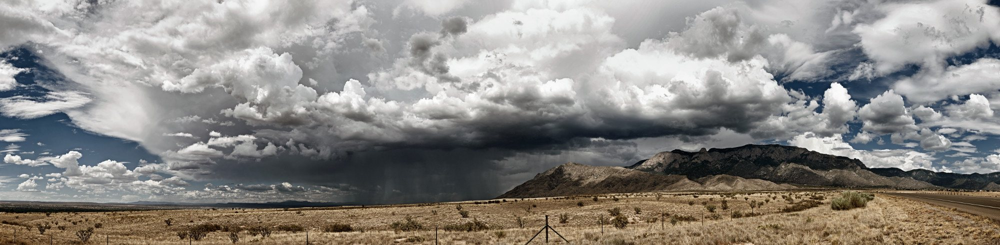
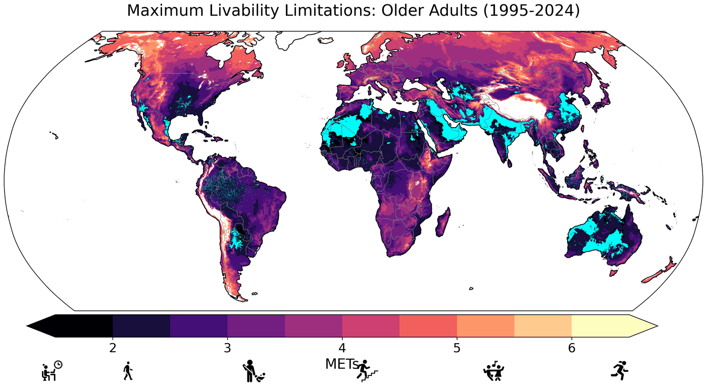
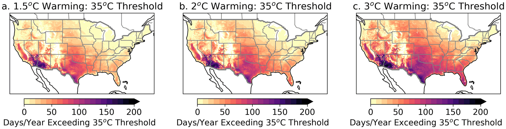
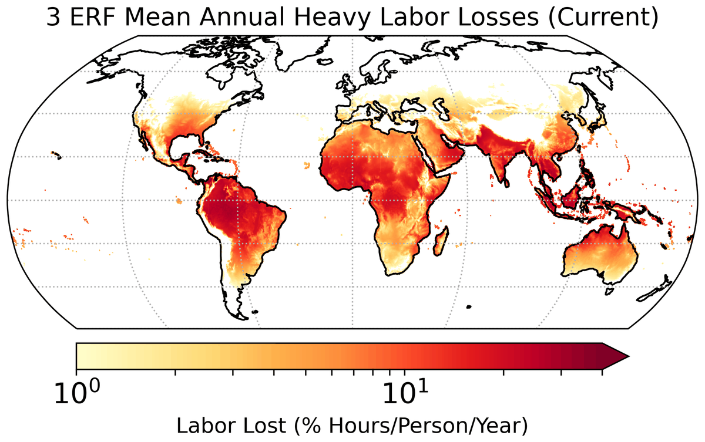
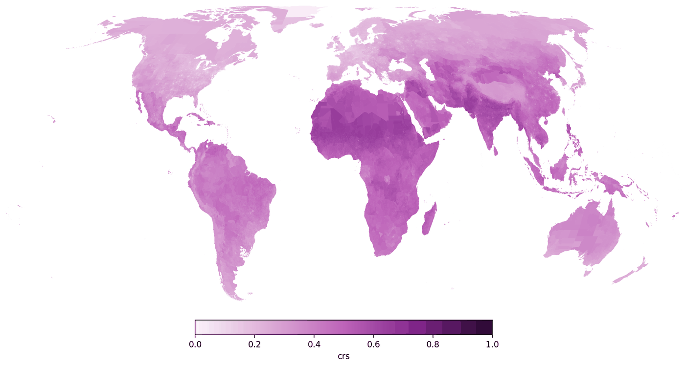
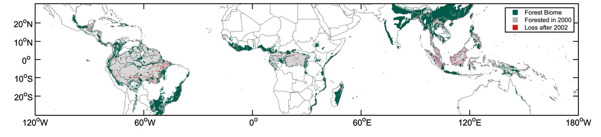
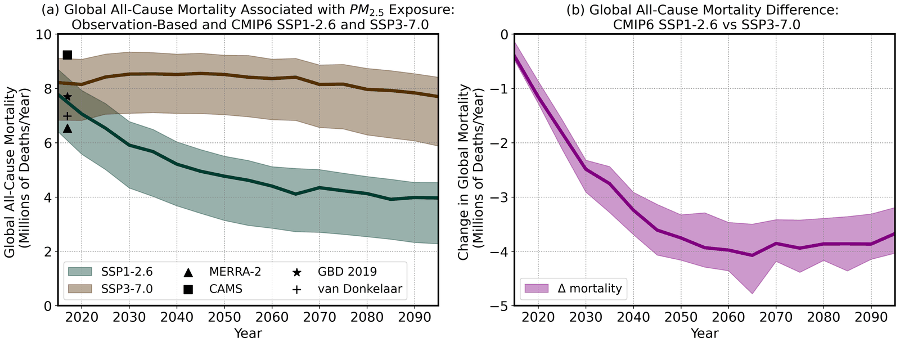
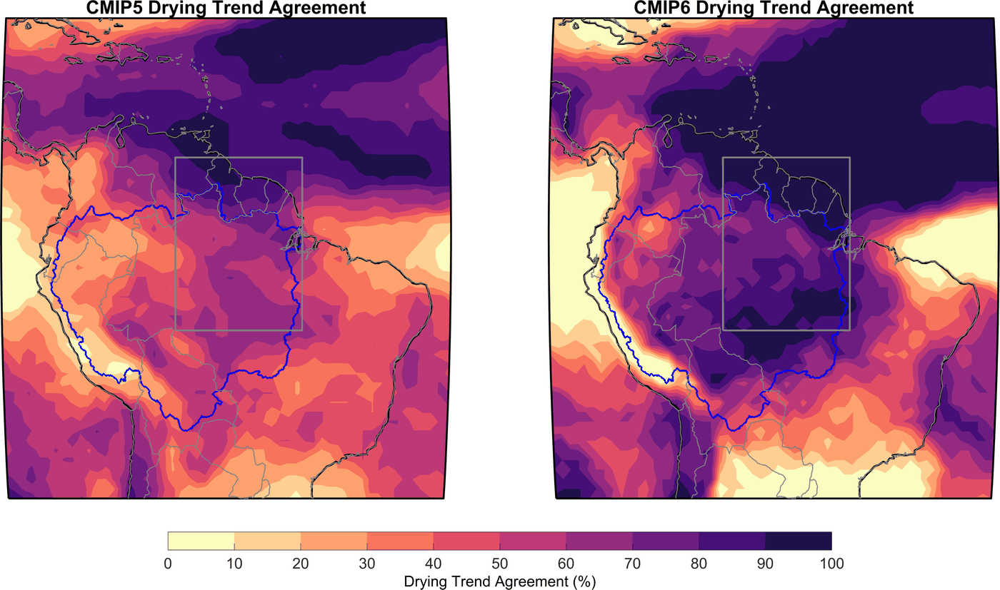

Research
My work asks where and when heat, humidity, and air pollution make conditions unsafe for people, how that is changing with global warming and land use, and who is most exposed.

- Extreme heat and livability
- Climate risk assessment
- Forests, land use, and heat
- Air pollution and health
- Earlier work
Extreme heat and livability
Hot, humid conditions limit how much physical activity the body can sustain before its core temperature rises out of control. I combine hourly reanalysis data, climate model projections, and human heat-balance models to estimate where those limits are already being reached, how they are changing, and who is most affected.
Livability limits for younger and older adults
Using a human heat-balance model (HEAT-Lim) with hourly ERA5-Land data for 1950–2024, we mapped where heat and humidity already restrict safe physical activity in the shade. Livability limitations increased significantly over the past 75 years, are on average greatest in high-vulnerability areas, and are especially widespread for adults over 65. In the hottest hours of the year, some locations have already experienced “unlivable” conditions, in which no level of activity can offset the environmental heat load.

Parsons et al. (2026), Environmental Research: Health
Heat disparities and the limits of electric fans in the US
Electric fans are one of the cheapest ways to stay cool, but they stop being safe above certain air temperatures. Over recent decades, hours too hot for safe fan use increased across most of the contiguous US, by about 70% on average, and people in high social-vulnerability areas are 1.5–2 times more likely to experience hotter conditions than the overall population. The temperature gap between high- and low-vulnerability areas grew from about 1.3°C (1951–1980) to about 1.6°C (1994–2023), and it widens with further warming: at 2°C of global warming, high-vulnerability areas would see about 18 more days per year above 35°C.

Parsons et al. (2023), GeoHealth; Parsons et al. (2026), Earth's Future
Heat and outdoor work
Humid heat may already be associated with over 650 billion hours of lost labor each year, equivalent to about 148 million full-time jobs and over 400 billion hours more than earlier estimates. In today's climate, moving heavy work out of the hottest hours could recover roughly a third of those losses, but that option fades as early-morning heat rises to unsafe levels with further warming.

Parsons et al. (2022), Environmental Research Letters; Parsons et al. (2021), Nature Communications
Related work:
Climate risk assessment
Deciding where to invest in adaptation depends on knowing which places face the most severe combination of climate hazards, exposed people, and social vulnerability. I map that combination at scales from global to local.
Climate Risk Explorer (in development)
With colleagues at The Nature Conservancy, I am leading development of a global Climate Risk Explorer. It summarizes climate indicators from ERA5 reanalysis and from downscaled CMIP6 projections in the World Bank Climate Change Knowledge Portal, including extreme heat (TXx), heavy rainfall (R95, R20), aridity, and fire weather (FWI), at national, state or provincial, and district levels worldwide. Overlaying these hazards with population and social vulnerability data shows which areas, globally, regionally, or locally, could face the highest risk. The tool is currently internal to The Nature Conservancy and supports its efforts to help 100 million people adapt to climate change.

Forests, land use, and heat
Trees in the tropics appear to limit how hot the air near the ground can get. I study how losing forests changes local temperatures and the safety of outdoor work, and what forests mean for people adapting to a hotter climate.
Deforestation and safe working hours across the tropics
Twenty-first-century deforestation across the tropics has already significantly increased unsafe working conditions from humid heat for almost 5 million people, including several million outdoor workers. Over the same period, the increase in humid heat exposure for people in deforested areas, compared with forested areas, was much larger than the effect of recent climate change.

Parsons et al. (2021), One Earth
Deforestation, heat, and health in Berau, Indonesia
Between 2002 and 2018, about 17% of the Berau regency was cleared of forest, which raised mean daily maximum temperatures by about 0.95°C. Unsafe work time increased by 0.31 hours per day in deforested areas, compared with 0.03 hours per day where forest cover remained.
Wolff et al. (2021), The Lancet Planetary Health
Related work:
Air pollution and health
The fossil fuel emissions that drive warming also produce fine particulate matter (PM2.5), which is associated with lost work days and with cardiovascular and respiratory disease. I study how large these health burdens are and how quickly emissions reductions bring benefits.
How certain are the benefits of cleaner air?
Estimates of present-day deaths linked to PM2.5 depend strongly on which exposure dataset is used, ranging from about 6.5 to 9.2 million per year. The projected near-term benefits of emissions reductions are much more certain: through mid-century, the uncertainty in avoided deaths is smaller than the uncertainty in today's mortality estimates.

Parsons et al. (2023), Earth's Future
Related work:
Earlier work: climate variability, drought, and paleoclimate
During my PhD at the University of Arizona and postdoctoral work at the University of Washington, I used climate model ensembles, paleoclimate records, and paleoclimate data assimilation to study how natural variability and forced change combine. When natural decadal variability is strong, local change can stall for decades and then arrive abruptly; when it is weak, change unfolds more steadily. That distinction matters for anticipating drought in regions like the American Southwest and the Amazon.

Selected papers: